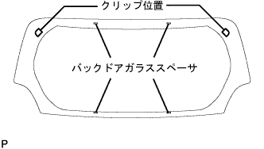

Back door glass removal |
| 1. Remove the backdoor trim board |
 |
Remove the nine clips and remove the Batsukudo Atlim board.
| 2. Centaster top lamp cover removed |
 |
Press the center tsuplan cover in the direction of ① and pull it in the direction of ②, and separate the two places of the claws in parts A.
Pull the center tsuplan cover in the direction of ③, remove the clip two places, and remove the center tsuplan cover.
| 3. Centaster top ramp ASSY removed |
Remove the clamp and separate the harness of the center tsuplamp ASSY from the centust plasticquetto.
 |
Press the center tsupramp ASSY in the direction of ① and rotate in the direction of ②, and separate the two places of the claws of the part B.
Remove the connector and remove the center tsupramp ASSY.
| 4. Remove the rear waiper arm head cap |
| 5. Remove the rear wai arm asser |
Remove the nut and remove the rear wiperem.
| 6. Back window glass channel RH removed |
Use the clip remover to remove the two clips and remove the Batsukudo Garaschi Yannel RH.
Warm the double -sided tape remaining in the door with an infrared lamp.
Rub the double -sided tape remaining in the body with a rag.
| 7. Back window glass channel LH removed |
The RH side is performed in the same procedure as LH.
| 8. Remove the backdoor glass |
|  |
Cut each connector.
Put the suction rubber on the glass.
Put a protective tape on the body surface on the outer periphery of the glass.
Apply soap water sufficiently to the adhesive part.
 |
Insert a wind shield knife into the adhesive part.
While holding the edge and the edge of the glass at a right angle, the blade of the wind shield knife is adjusted to the glass surface and the end, and the adhesive is drawn parallel to the glass end to cut the adhesive.
 |
As shown in the figure, the piano wire (0.6 mm is appropriate) is passed through) and both ends are attached to the Mighty Player.
Pull the piano line alternately to leave the spacer and clip, and cut the adhesive.
Remove the spacer and clip and remove the crumbous glass with suction rubber.